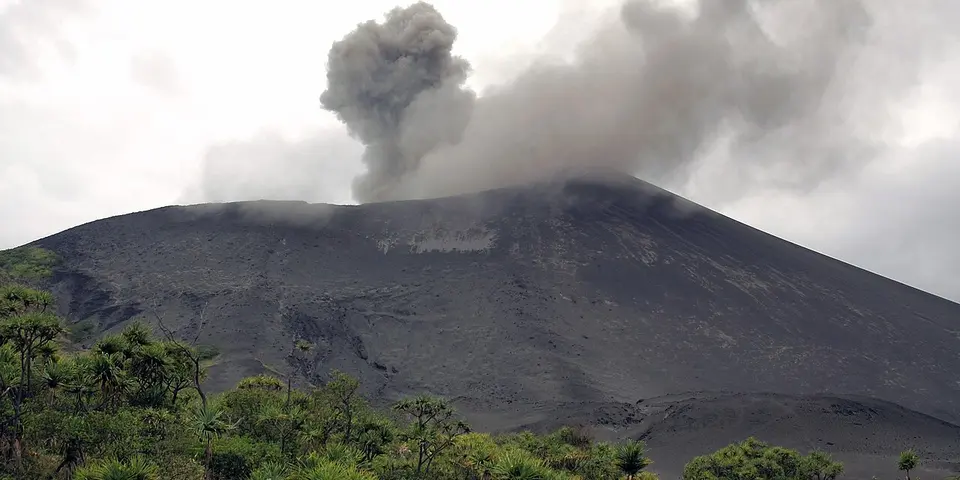

Oceania
Vanuatu on a budget
An active volcano you can stand on, swimming blue holes and WWII wrecks, spread across friendly Melanesian islands.
Photo: Rolf Cosar, CC BY 2.5, via Wikimedia Commons

Classic route
Port Vila, Tanna for Mount Yasur, then Espiritu Santo. 10 days.
Before you go
Flights to Tanna: Skyscanner · Kiwi.com · Google Flights
Hostels and guesthouses in Tanna · Espiritu Santo · Mount Yasur · Port Vila
Tours and tickets: Tanna · Espiritu Santo
Mobile data: Vanuatu eSIM
Travel insurance: SafetyWing
How much 9 places in Vanuatu cost
Daily budgets per person in US dollars: a hostel dorm or simple guesthouse, local food, local transport and the usual entry fees.
-
Tanna
Custom villages, the sheltered bay of Port Resolution and the John Frum cargo cult village of Sulphur Bay, all under an active volcano.
Bed $40 · Food $12 · Getting around $15 · Extras $5
Budget tip: Ask your bungalow to arrange a village visit rather than booking a tour from Port Vila; it costs less and the money stays local.
$72per day -
Espiritu Santo
Champagne Beach, jungle blue holes for swimming and the SS President Coolidge, one of the world's great wreck dives.
Bed $35 · Food $12 · Getting around $8 · Extras $8
Budget tip: Rent a car with others to visit the blue holes. Island bungalows run by local families cost less than resorts.
$63per day -
Mount Yasur
Stand on the crater rim of an erupting volcano at dusk as lava bombs burst into the sky with a thundering roar.
Bed $40 · Food $12 · Getting around $15 · Extras $90
Budget tip: The volcano entry fee is high, but bungalows near the volcano often include the trip in their packages. Follow the guides' safety instructions.
$157per day -
Port Vila
Vanuatu's easygoing capital, with the Mele Cascades waterfalls, a busy fresh produce market and lagoon swimming right from town.
Bed $35 · Food $12 · Getting around $3 · Extras $5
Budget tip: Shared minibuses marked 'B' go anywhere in town for a fixed fare. Eat lunch at the market's food stalls for a cheap, filling meal.
$55per day -
Champagne Beach
Soft white sand and calm clear water on Espiritu Santo's east coast, close to the Port Olry villages and their bungalow stays.
Bed $35 · Food $12 · Getting around $10 · Extras $3
Budget tip: Avoid cruise ship days, when crowds arrive; stay in Port Olry bungalows and pay the small custom landowner fee.
$60per day -
Malekula
Remote Small Nambas villages in the rugged island interior, where traditional dances and custom life continue far from the tourist trail.
Bed $30 · Food $10 · Getting around $15 · Extras $10
Budget tip: Bungalows on the offshore islets near Lakatoro are the easiest and cheapest base, and hosts can arrange village visits.
$65per day -
Aneityum
Southernmost inhabited island of Vanuatu, with reefs around Mystery Island, ancient stone carvings and quiet kastom villages.
Bed $40 · Food $12 · Getting around $25 · Extras $5
Budget tip: Domestic flights are infrequent, so book ahead; stay in village bungalows and avoid cruise days on Mystery Island.
$82per day -
Ambrym
Hike across a vast black ash plain to the smoking twin craters of Marum and Benbow, then watch the Rom dance in the island's north.
Bed $35 · Food $10 · Getting around $15 · Extras $30
Budget tip: Treks to the craters need a local guide and a night camping on the ash plain; check volcanic activity levels before you go.
$90per day -
Pentecost Island
Home of naghol land diving, where men leap from tall wooden towers with vines tied to their ankles, the origin of bungee jumping.
Bed $40 · Food $10 · Getting around $15 · Extras $60
Budget tip: Land diving takes place on Saturdays from April to June. Bookings through operators are pricey, so ask locally about village arrangements.
$125per day
Know before you go
Vanuatu on a budget: the basics
Currency
$1 = 120 VUV
Vanuatu vatu
| Dollars to VUV | VUV to dollars | ||
|---|---|---|---|
| $1 | 120 VUV | 100 VUV | $0.832 |
| $5 | 601 VUV | 500 VUV | $4.16 |
| $10 | 1,202 VUV | 1,000 VUV | $8.32 |
| $20 | 2,403 VUV | 5,000 VUV | $41.61 |
| $50 | 6,008 VUV | 10,000 VUV | $83.23 |
| $100 | 12,016 VUV | 50,000 VUV | $416 |
A typical day here (about $72) is roughly 8,700 VUV.
Mid-market rate on 2026-10-05. Cash machines and exchange desks pay a little less.
Getting around
In Port Vila, minibuses with a B on the number plate act as shared taxis and charge a flat fare for most trips around town. Domestic flights connect Efate with Tanna and Espiritu Santo, and are worth booking ahead as schedules are limited. On Tanna, trucks and arranged 4x4 transfers are the way to reach Mount Yasur.
Where to sleep
Locally run bungalows and guesthouses are the usual budget stay, often with meals included. On Tanna, simple bungalows and tree houses near Mount Yasur are popular.
What to eat
- Lap lap: grated root vegetable pudding baked with coconut cream
- Simboro: grated cassava wrapped in island cabbage leaves
- Tuluk: cassava parcel with a pork filling, a cheap snack
- Kava: strong, earthy root drink served in nakamals at dusk
Money
Cash in vatu is needed outside Port Vila and Luganville, as cards are rarely accepted and ATMs are scarce on outer islands. Tipping and haggling aren't part of the culture.
Phone data
Prepaid SIMs from Digicel or Vodafone are sold in Port Vila with your passport, with decent coverage in towns and limited signal on outer islands.
Heads up
Many sites charge a custom fee to the landowners, so ask before entering land, swimming at a beach or taking photos.
Vanuatu travel: quick answers
How much does a day in Vanuatu cost on a budget?
About $72 a day for one person, from $55 in Port Vila to $157 in Mount Yasur. That covers a hostel dorm or simple guesthouse, local food, local transport and the usual entry fees, so a week runs about $504 before flights.
When is the best time to visit Vanuatu?
May to October is the best time, with the most reliable weather for getting around.
What is the cheapest place to visit in Vanuatu?
Port Vila, at about $55 a day. Vanuatu's easygoing capital, with the Mele Cascades waterfalls, a busy fresh produce market and lagoon swimming right from town.
How long do you need in Vanuatu?
Port Vila, Tanna for Mount Yasur, then Espiritu Santo. 10 days.
How much is $1 in Vanuatu?
One US dollar is about 120 Vanuatu vatu (VUV), going by the mid-market rate on 2026-10-05. So $20 is roughly 2,403 VUV, and a typical budget day of $72 comes to about 8,700 VUV.
How do you get around Vanuatu cheaply?
In Port Vila, minibuses with a B on the number plate act as shared taxis and charge a flat fare for most trips around town. Domestic flights connect Efate with Tanna and Espiritu Santo, and are worth booking ahead as schedules are limited. On Tanna, trucks and arranged 4x4 transfers are the way to reach Mount Yasur.
What food should you try in Vanuatu?
Lap lap, grated root vegetable pudding baked with coconut cream. Simboro, grated cassava wrapped in island cabbage leaves. Tuluk, cassava parcel with a pork filling, a cheap snack. Kava, strong, earthy root drink served in nakamals at dusk.
Planning around the seasons? See where to go in May, or compare the cheapest countries nearby.
Similar budgets nearby
- New Zealand $76/day
- Australia $77/day
- Fiji $65/day
- Samoa $52/day